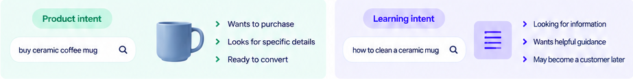
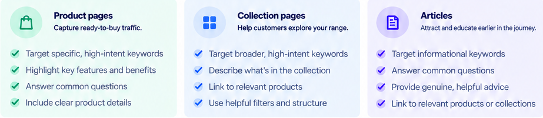
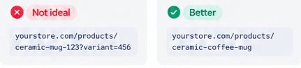
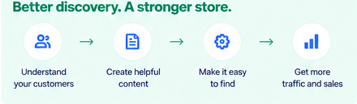

You do not need to become an SEO technician to make a Shopify store easier to discover.
You do need to understand a few basic ideas: what someone is searching for, which page should answer that search, what words make the page understandable, and how the rest of your site helps search systems discover and interpret it.
1. Start with search intent, not a keyword list
Search intent is the reason behind a search. Someone typing “green oversized cotton tee” is signaling something different from someone typing “how should an oversized tee fit?”
The first search sounds product-focused. The second sounds informational. Those searches may deserve different pages.

SEO gets easier when you decide what job a page is supposed to do before you start optimizing it.
2. Keywords are clues, not cargo
A keyword is simply a word or phrase people use when searching. Useful keyword research can reveal the language customers use, the level of specificity they expect, and the questions worth answering.
That does not mean every phrase belongs in every field. Your job is to use the language naturally where it helps explain the page.
Keyword research tells you what people are trying to express.
Your content should answer that need clearly. It should not sound like a storage locker for every phrase you found.
3. Product pages and collection pages answer different searches
A product page is about one specific item. A collection page groups multiple products around a useful category, style, theme, attribute, or shopping intent.
That difference matters because broader searches often make more sense for collections, while highly specific searches may point naturally to a product.

A logical structure also helps people and search systems move from broad topics to specific products instead of landing on isolated pages with no context.
4. Images contribute context too
Search optimization is not limited to visible paragraphs. Product images can contribute context through descriptive filenames, useful alt text, and the surrounding page content.
Those fields should still serve their primary jobs. A filename identifies the file. Alt text communicates useful image meaning. Neither should be stuffed with search phrases.
See how filenames, alt text, and visible copy do different jobs →
5. URLs should be readable, not clever
A readable URL gives both people and systems another clue about where they are. Keep handles concise, descriptive, and easy to interpret.

The goal is not to cram a sentence into the URL. It is to make the page identity obvious.
6. Internal links explain how your pages relate
Internal links are links between pages on your own store. They help shoppers continue a journey and help search systems discover relationships between your content.
A winter coat product page might link to a winter accessories collection. A guide about caring for linen might link to linen products. A collection may link to a relevant buying guide.
Use link text that describes where the link goes. “See our linen care guide” gives more context than “click here.”
7. Shopify handles some technical SEO for you
Shopify provides a baseline site structure and built-in technical SEO features, but that does not replace good content architecture. You still control how products are named, how collections are organized, what pages say, how images are described, and how pages connect to one another.
Those are the parts small stores can improve without needing to become search engineers.
Where penstack fits in
Penstack helps turn product and collection context into clearer titles, descriptions, image details, and related content without treating SEO as a separate pile of keyword chores.
The goal is to make the underlying catalog easier to understand first. Search optimization works better when the structure and content are already doing useful work for shoppers.
The takeaway
Good Shopify SEO is mostly good information architecture plus useful content.

Put better product content into a repeatable workflow.
penstack keeps product context, generation, review, and publishing connected.